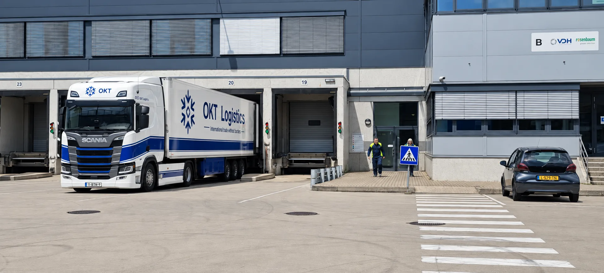

Cookies
Uw cookie-instellingen.
U bepaalt of optionele statistieken mogen worden gebruikt.

Functionele opslag en optionele statistieken
De website kan uw cookievoorkeur lokaal in uw browser onthouden. Het aanvraagformulier bewaart ingevulde gegevens niet permanent in uw browser. Een tijdelijke bevestiging kan in de browsersessie worden opgeslagen na een geslaagde verzending.
In deze versie zijn geen analysetags geactiveerd. Als later statistieken worden ingesteld, worden ze pas geladen na uw toestemming. De definitieve cookie-informatie moet aansluiten op de gekozen diensten.